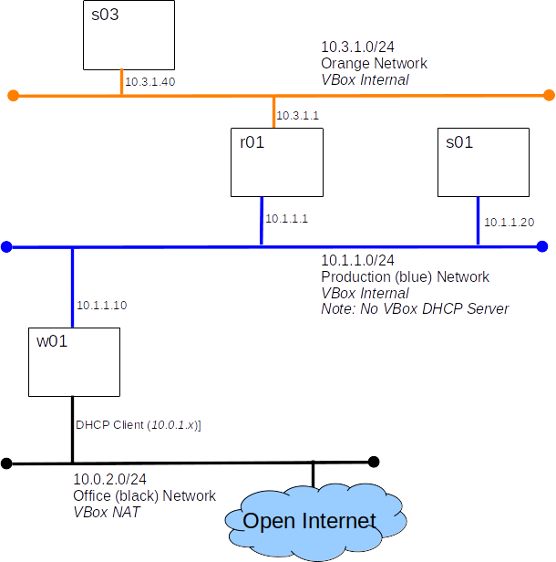

COMP-10018: Test 3
- You have 60 minutes to complete this test.
- All work must be done in class on a freshly imported VM.
- The test is 100% open book including resources from the Internet.
- You may use scripts you have written yourself.
- The test is an individual effort.
- Communication with another person during the test is forbidden.
- Run fresh_check.sh to verify that you have a fresh import.
Grading:
You will run a host info script on s01 and submit the report to Canvas.
Part A: Build this configuration (10 points)

- Create s03 and r01 by cloning s01
- Update /etc/hosts files on s01
- s01 and s03 must be able to communicate via IP
- Remember to stop and disable the firewalld service on r01.
- Make no changes to w01 (w01 does not need to ping s03)
Part B: Backups (3 points)
- On s01 create a cpio archive named /tmp/conf.cpio containing every file
residing in the /etc directory tree
who's name ends in .conf
- On s01 create a tar archive named /tmp/root_home.tar containing every file residing in root's home directory.
Part C: ssh (2 points)
- Write a single command line that will create a file named /tmp/1.txt on s03 containing the text "hello".
-
Your command line must start with: echo hello | ssh root@s03
- Test your command by running it on s01
- Create a text file named /tmp/ssh_cmd.txt on s01 containing your command line.